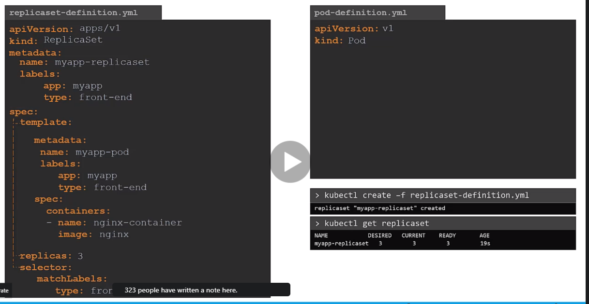
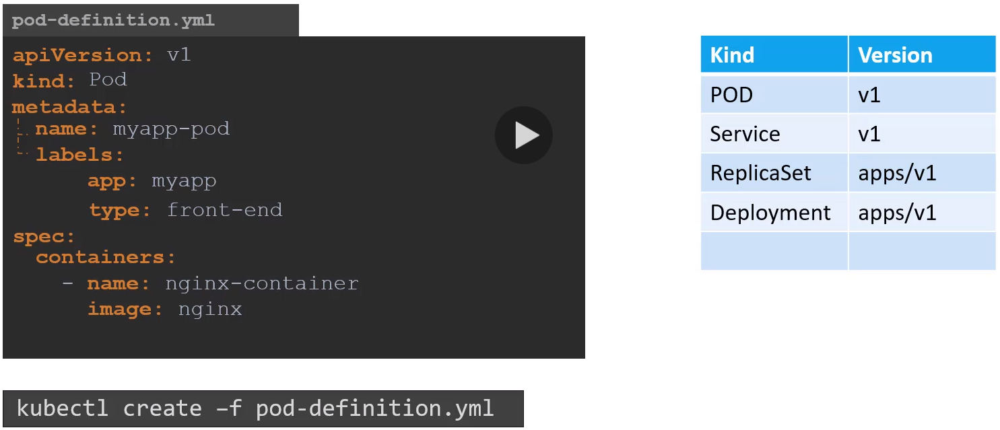
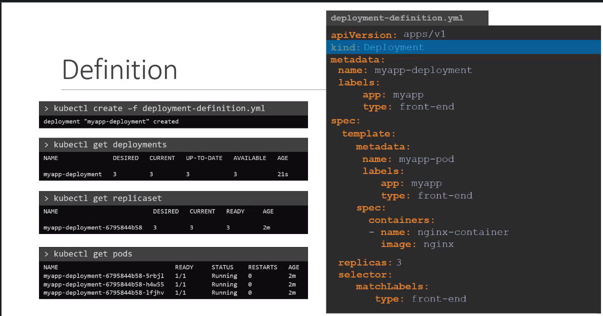
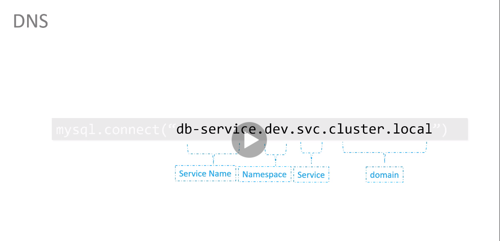
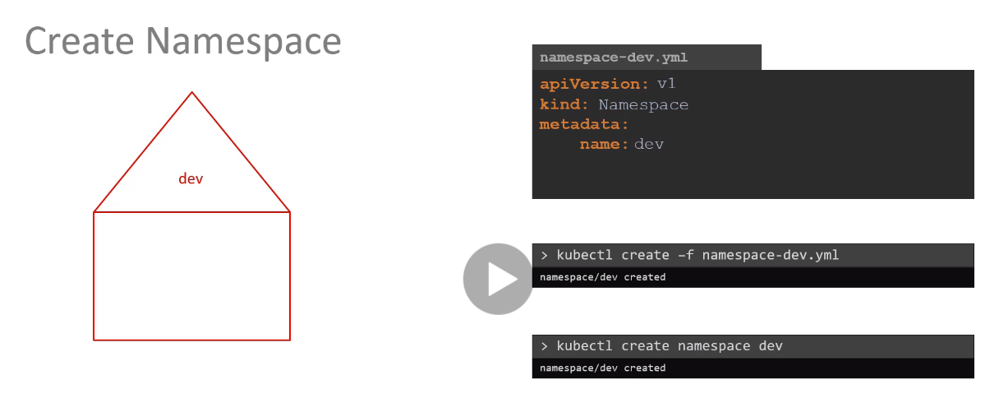
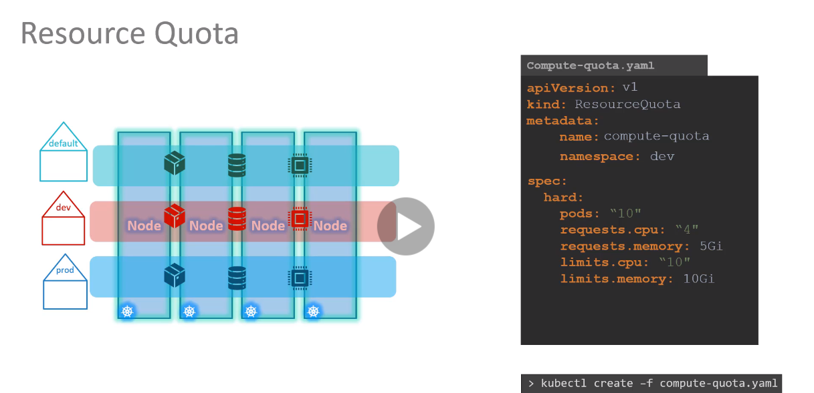

ReplicaSets


PODS

kubectl get pod
kubectl get pod -o wide
kubectl describe pod '이름'
kubectl run '이름' --image='이미지 이름'
kubectl delete pod '이름'
kubectl edit pod '이름'
ReplicaSets

kubectl get replicaset
kubectl delete replicaset '이름'
kebectl describe replicaset '이름'
kubectl create -f 파일이름.yml
kubectl replace -f 파일이름.yml
kubectl scale --replicas=6 -f 파일이름.yml
kubectl scale replicas=6 replicaset '이름'
Deployment

kubectl create deployment --image='이미지 이름' '이름'
kubectl get deployment
kubectl delete deployment '이름'
kubectl get all
kubectl create deployment --image='이미지 이름' '이름' --dry-run=client -o yaml > 파일이름.yml



kubectl get pods --namespace=dev
kubectl config set-context $(kubectl config current-context) --namespace=dev
kubectl get pods --all-namespaces
apt update -y
apt upgrade -y
apt install net-tools -y
apt install ntp -y
sudo hostnamectl set-hostname ubuntu-ft-kmaster1
sudo hostnamectl set-hostname ubuntu-ft-kworker1
sudo hostnamectl set-hostname ubuntu-ft-kworker2
#192.168.137.101
#192.168.137.111
#192.168.137.112
어뎁터 옵션 변견 -> 이터넷 송성 -> 공유 -> 인터넷 연결 공유 -> virtualbox host-only network 선택
network:
ethernets:
enp0s3:
dhcp4: false
addresses: - 192.168.137.101/24
gateway4: 192.168.137.1
nameservers:
addresses: [8.8.8.8, 8.8.4.4]
version: 2
netplan apply
- apt가 HTTPS로 리포지터리를 사용하는 것을 허용하기 위한 패키지 설치
sudo apt-get update && sudo apt-get install -y apt-transport-https ca-certificates curl software-properties-common gnupg2
- 도커 공식 GPG 키 추가:
curl -fsSL https://download.docker.com/linux/ubuntu/gpg | sudo apt-key --keyring /etc/apt/trusted.gpg.d/docker.gpg add -
- 도커 apt 리포지터리 추가:
sudo add-apt-repository \
"deb [arch=amd64] https://download.docker.com/linux/ubuntu \
$(lsb_release -cs) \
stable"
- 도커 CE설치
sudo apt-get update && sudo apt-get install -y containerd.io=1.2.13-2 docker-ce=5:19.03.11~3-0~ubuntu-$(lsb_release -cs) docker-ce-cli=5:19.03.11~3-0~ubuntu-$(lsb_release -cs)
- /etc/docker 생성
sudo mkdir /etc/docker
- 도커 데몬 설정
cat <<EOF | sudo tee /etc/docker/daemon.json
{
"exec-opts": ["native.cgroupdriver=systemd"],
"log-driver": "json-file",
"log-opts": {
"max-size": "100m"
},
"storage-driver": "overlay2"
}
EOF
- /etc/systemd/system/docker.service.d 생성
sudo mkdir -p /etc/systemd/system/docker.service.d
- 도커 재시작 & 부팅시 실행 설정 (systemd)
sudo systemctl daemon-reload
sudo systemctl restart docker
sudo systemctl enable docker
apt update -y
apt upgrade -y
- Swap off
sudo swapoff -a
vi /etc/fstab # SWAP이 정의된 줄을 '#'으로 주석처리해준다.
- kubeadm, kubelet, kubectl 을 설치
sudo apt-get install -y apt-transport-https curl
curl -s https://packages.cloud.google.com/apt/doc/apt-key.gpg | sudo apt-key add -
cat <<EOF | sudo tee /etc/apt/sources.list.d/kubernetes.list
deb https://apt.kubernetes.io/ kubernetes-xenial main
EOF
sudo apt-get update
sudo apt-get install -y kubelet kubeadm kubectl
- 자동업데이트 방지
sudo apt-mark hold kubelet kubeadm kubectl
- 버전 확인
kubeadm version
kubelet --version
kubectl version
- Master Node 설정
apt-get install bash-completion
echo 'source <(kubectl completion bash)' >>~/.bashrc
kubectl completion bash >/etc/bash_completion.d/kubectl
echo 'alias k=kubectl' >>~/.bashrc
echo 'complete -F \_\_start_kubectl k' >>~/.bashrc
- sudo kubeadm init --apiserver-advertise-address (마스터 노드 접속 가능한 IP) --pod-network-cidr=(클러스터 내부적으로 사용할 네트워크 대역)
sudo kubeadm init --apiserver-advertise-address 192.168.137.101 --pod-network-cidr=192.168.100.0/24
mkdir -p $HOME/.kube
sudo cp -i /etc/kubernetes/admin.conf $HOME/.kube/configㄷ턋
sudo chown $(id -u):$(id -g) $HOME/.kube/config
export KUBECONFIG=/etc/kubernetes/admin.conf
- loop 주석처리
kubectl edit cm coredns -n kube-system
kubectl apply -f https://raw.githubusercontent.com/coreos/flannel/master/Documentation/kube-flannel.yml
- Slave Worker Node 설정
kubeadm join 192.168.137.101:6443 --token j3p31i.g5hbuh0z8o2zvak5 \
--discovery-token-ca-cert-hash sha256:68de3248c5ae69cf4ffe85de32f296c74abcf47654fcbad2dce2e0bfcb193e05
kubectl patch node ubuntu-ft-kworker1 -p '{"spec":{"podCIDR":"192.168.100.0/24"}}'
- Master Node UI 설치
kubectl apply -f https://raw.githubusercontent.com/kubernetes/dashboard/v2.2.0/aio/deploy/recommended.yaml
kubectl proxy --port=8001 --address=192.168.137.101 --accept-hosts='^\*$'